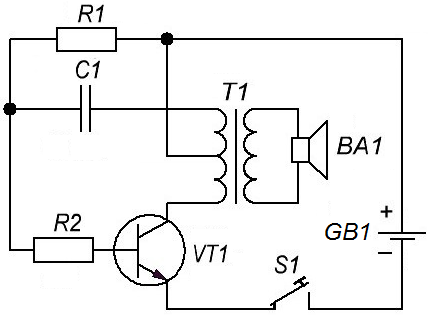
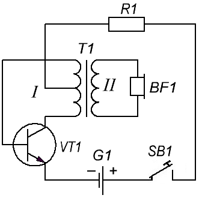

Тренажёр азбуки Морзе
На рисунке 1 показана схема низкочастотного генератора, который можно применить в тренажёре по изучению азбуки Морзе.

Таблица 1
| Обозначение | Наименование | Номинал | Примечание |
|---|---|---|---|
| BA1 | Громкоговоритель | 8 Ом / 0,25 Вт | |
| С1 | Конденсатор | 0,015 мкФ | |
| GB1 | Батарейка | 9 В | Крона |
| R1 | Резистор постоянный | 30 кОм / 0,25 Вт | |
| R2 | Резистор постоянный | 1,1 кОм / 0,25 Вт | |
| T1 | Трансформатор | выходной от карманного радиоприёмника. | |
| VT1 | Транзистор биполярный | МП37 |
Когда замыкается ключ S1, ток протекает от плюса батареи к отводу от середины первичной обмотки трансформатора Т1, через половину первичной обмотки трансформатора, конденсатор С1 и переход база-эмиттер транзистора. Транзистор открывается. Далее ток от плюса батареи начинает протекать через второю половину первичной обмотки трансформатора и открытый транзистор к минусу батареи.
Конденсатор С1 заряжается согласно показанной на схеме полярности. Когда напряжение на С1 достигает определённого значения, зарядный ток становится равным нулю и транзистор VТ1 закрывается.
Конденсатор С1 разряжается через резистор R1 и первую половину первичной обмотки тансформатора и процесс начинается вновь. Цикл заряда-разряда составляет около 500 миллисекунд.
Суммарное магнитное поле,полученное от протекающего тока через две половины первичной обмотки трансформатора, индуктирует напряжение во вторичной обмотке.
Громкоговоритель, включенный в цепь вторичной обмотки, воспроизводит звук частотой 2 кГц.
В схеме генератора звуковой частоты, представленной на рисунке 2, отсутствует частотозадающий конденсатор. Работать он начинает при напряжении питания в несколько десятых долей вольта, даже в случае использования транзистора с минимальным коэффициентом передачи тока (но не менее 10).

Генерация электрических колебаний возникает при нажатии телеграфного ключа SB1 из-за действия сильной положительной обратной связи между коллекторной и базовой цепями транзистора. Звук слышится из головного телефона BF1, подключённого ко вторичной обмотке трансформатора. Резистором R1 устанавливают нужную громкость звука и его тональность.
Таблица 2
| Обозначение | Наименование | Номинал | Примечание |
|---|---|---|---|
| BF1 | Головной телефон | ТМ-2А | ДЭМ-4М, ДЭМШ, ТК-67, любой с сопротивлением 60..300 Ом |
| G1 | Элемент питания | 1,5 В | |
| R1 | Резистор постоянный | 390 Ом / 0,25 Вт | |
| T1 | Трансформатор | выходной от карманного радиоприёмника. | |
| VT1 | Транзистор биполярный | КТ315А | любой маломощный кремниевый структуры n-p-n |
При использовании транзистора структуры p-n-p необходимо изменить полярность подключения элемента G1.